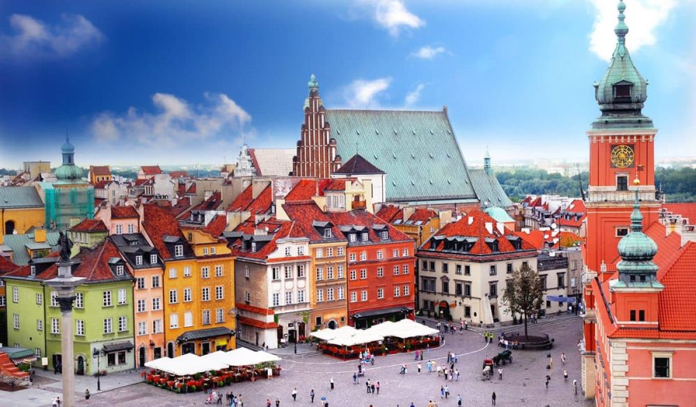

Descoperă Varșovia - Orașul vibrant și istoric al Poloniei
Varșovia este capitala Poloniei și un oraș plin de istorie, cultură și energie:
-

Centrul vechi reconstruit
Centrul istoric al orașului a fost reconstruit după distrugerile din Al Doilea Război Mondial și oferă o atmosferă pitorească.
-

Castelul Regal
Această reședință istorică a regilor polonezi găzduiește muzeul și evenimente culturale.
-

Palatul Wilanów
O bijuterie arhitecturală cu grădini frumoase, palatul este un simbol al opulenței.
-

Muzeul Revoltei din Varșovia
Aici poți învăța despre Preluarea Varșoviei din 1944 și eroii acestei perioade tumultuoase.
-

Parcuri și spații verzi
Varșovia este plină de parcuri minunate, cum ar fi Parcul Lazienki, perfecte pentru relaxare și recreere.
Concluzii
Varșovia este un amestec vibrant de istorie și modernitate, oferind o experiență captivantă pentru vizitatori.